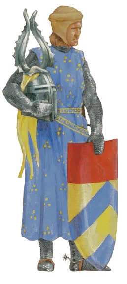
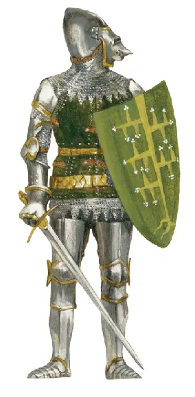

Armour (Commonwealth English) or armor (American English)
is a covering used to protect an object, individual, or vehicle from physical injury or damage,
especially direct contact weapons or projectiles during combat, or from a potentially dangerous environment or activity
(e.g. cycling, construction sites, etc.). Personal armour is used to protect soldiers and war animals
Etymology
The word "armour" began to appear in the Middle Ages as a derivative of Old French. It is dated from 1297 as a "mail,
defensive covering worn in combat". The word originates from the Old French armure, itself derived from the Latin armatura meaning
"arms and/or equipment", with the root armare meaning "arms or gear".
History
Armor has played an integral role throughout documented history. Crafted from a diverse array of materials, its origins
trace back to the use of leathers and fabrics for protection, gradually evolving through chain mail and metal plates to the sophisticated
composites we have today. Throughout much of military history, the creation of metal personal armor has been at the forefront, shaping the technology and utilization of armor.
The progression of armor has been a driving force behind key technologies in the Ancient World, spurring advancements such as wood lamination, mining, metal refining, vehicle manufacturing,
leather processing, and later, intricate metalworking for decorative purposes. Its production wielded significant influence during the industrial revolution, fostering the commercial growth of
metallurgy and engineering. Armor stands as the paramount factor in the evolution of firearms, marking a revolutionary shift in the landscape of warfare.
Crucial considerations in the evolution of armor encompass both economic and technological imperatives in its production. Plate armor, for instance, emerged in Medieval Europe when water-powered trip
hammers expedited and reduced the cost of plate formation. At various points, the progression of armor has mirrored the development of increasingly potent weaponry on the battlefield, prompting armorers
to devise enhanced protection without compromising mobility.

13th Century

14th Century
15th Century
Downfall
The advent of firearms in the late medieval and early modern periods brought about a significant transformation in military tactics and warfare, leading to a gradual decline in the use of traditional medieval armor.
Firearms, such as muskets and early rifles, presented a new and formidable challenge to the existing protective capabilities of armor. Unlike traditional melee weapons, firearms could deliver powerful projectiles at a distance,
making it increasingly difficult for armor to provide effective defense.
The ability of bullets to penetrate armor posed a threat to the once-impenetrable suits of plate and chainmail. As firearms became more prevalent and advanced, soldiers found themselves vulnerable to projectiles that could pierce
through even the strongest armor. This shift in weaponry contributed to the decline of the iconic knight in shining armor, as the protective gear that once defined medieval warriors became less effective against the evolving
technology of the battlefield.
Despite the decline in practical use, the legacy of medieval armor endures in various aspects of contemporary society. The imagery of knights in armor remains ingrained in popular culture, influencing artistic representations,
literature, and even modern concepts of chivalry. Moreover, certain elements of medieval armor have found a place in ceremonial attire and symbolic representations within modern military traditions.
The craftsmanship and artistry involved in creating medieval armor continue to be celebrated, with museums and historical reenactment groups preserving and showcasing these masterpieces. The intricate detailing, ingenious engineering,
and symbolic significance of armor have left a lasting impact on the understanding of medieval history and the martial heritage of different cultures.
In addition to ceremonial uses, the principles of protection and resilience embodied by medieval armor have influenced the design and development of modern military gear. While the materials and technology have evolved, the fundamental
concept of providing effective defense for soldiers persists. The evolution of body armor in contemporary military contexts can be seen as a continuation of the quest for enhanced protection that was at the core of medieval armor development.
In conclusion, while the practical utility of medieval armor waned with the rise of firearms, its cultural, artistic, and symbolic significance endured. The legacy of medieval armor serves as a testament to the ingenuity of the past, influencing
both the historical narrative and the ongoing development of protective gear in the present day.